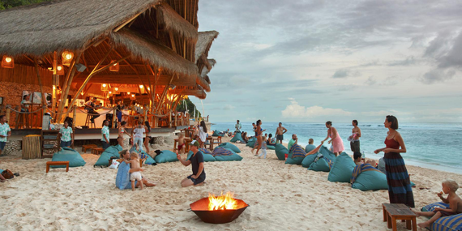

8. Unawatuna Beach |
|  |
Unawatuna is a beach town in Sri Lanka's Galle district and is a popular tourist destination in Sri Lanka because of its beach and coral reefs. It is a Galle suburb located 5 kilometres (3.1 miles) southeast of the city centre and 108 kilometres (67 miles) south of galle. Unawatuna stands at a height of 5 meters (16 feet) above sea level. Despite tremendous growth in the recent decade, the endangered and endemic purple-faced langur, a shy monkey species found exclusively in Sri Lanka's jungles, nevertheless calls Unawatuna home. A sea bath in Unawatuna is one of the refreshng things to do in Galle. |
Distance from Katunayaka Airport : 150 km and it takes about 2 to 2 ½ hours |